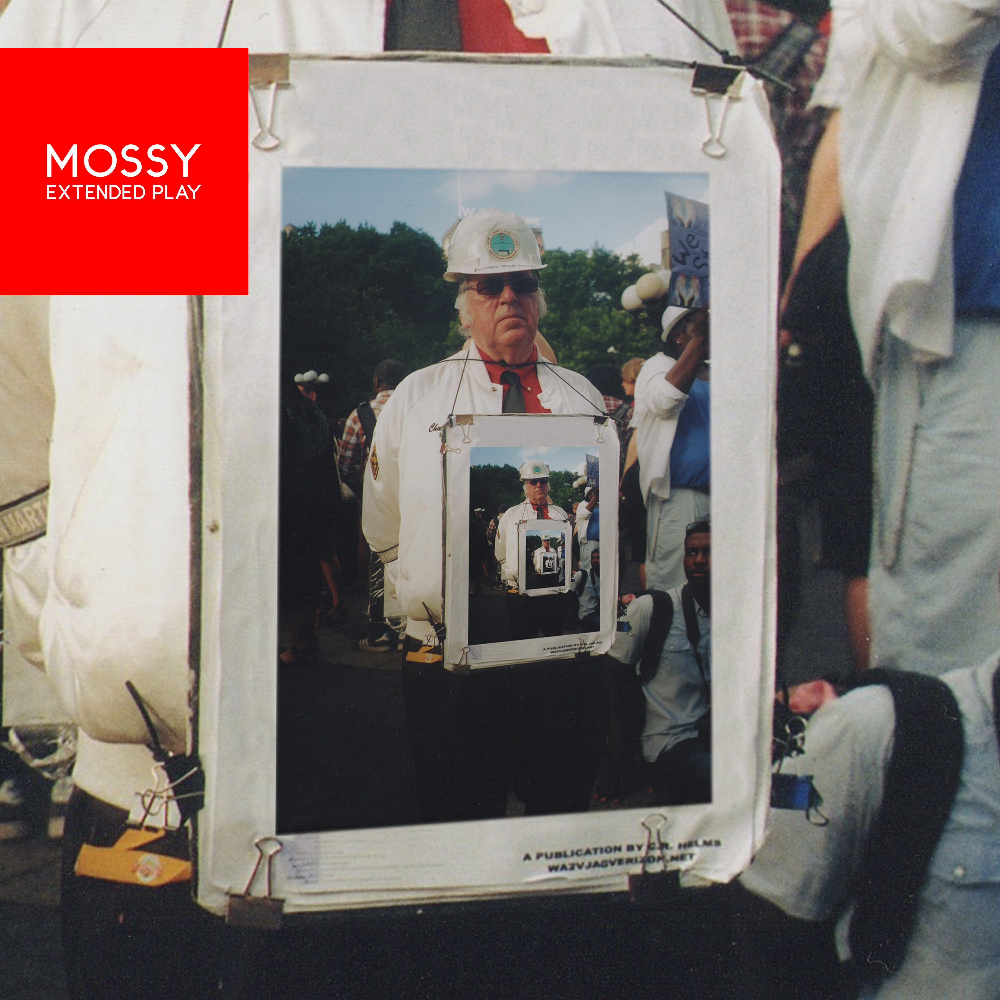

|  |
MOSSY MOSSY I OH YOU 6 May 2016 Review by Luke Stefanac |
|
Who the bloody hell is MOSSY? Plucked from the great unknown by none other than I Oh You, it turns out that MOSSY is the solo moniker of Jamie Timony, who you might recognise from his various acting roles, or as the frontman of These New South Whales. Stepping out into the spotlight on his lonesome, MOSSY has released his debut EP, written while sleeping on a blowup mattress in New York, which is made up of an eclectic bunch of songs that tie a range of influences and genres together. Lead single Electric Chair drops you right into a blissfully dreamy world that’s fuelled by swirling synths and a cracking beat that urges everything on. Complete with fat basslines and noodling guitars, MOSSY oozes an undeniable confidence mirrored by a charming delicacy from the vocal that helps whisk you away, resulting in a perfect slice of synth heaven that dives into the psychedelic. The same can be said of Shipping Yard and the instrumental Spa, both guitar driven jams built upon undeniable grooves and experimental touches that showcase an ability to jump between genres without any trouble at all. The second half starts with the woozy and wobbly Waterfall, whose textured synths and soothing vocals come together to gently wash over you and take away all your troubles. And closing out the EP is Ginsberg, an ode to the great poet that travels through vivid imagery and sparse, weaving sounds before bursting into an emphatic call to action. Out of nowhere, MOSSY has delivered a dreamy EP that flits across a wide range of sounds without a second thought, and hits all the marks. The attention to the intricate and catchy lyricism present throughout these songs create a highly enjoyable debut that keeps inviting you back for another listen. 'MOSSY' is out now through I Oh You. |